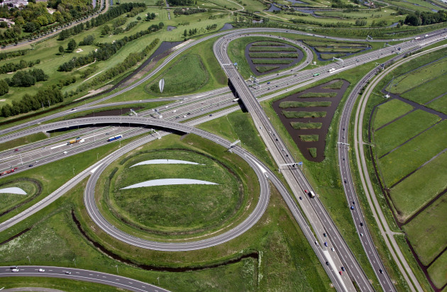

Vroeger speelde ik veel stad-simulator spellen zoals SimCity. Je moest rekeninghouden met je stadsuitgaven, de inkomsten maar ook hoe je de infrastructuur aanlegt. Dit vond ik erg leuk om te doen. Ik leerde al gauw dat een slechte infrastructuur ertoe kon leiden dat de bewoners van je stad niet efficiënt van A naar B konden komen. Ik probeerde de files op te lossen en daar kon ik dan uren mee bezig zijn. Ik haalde mijn inspiratie uit het echte leven, want hoe gaan we in reallife van A naar B?
Nog steeds kijk ik graag naar buiten terwijl ik in de bus zit, ik bewonder de infrastructuur in Nederland, het is netjes, overzichtelijk en het wordt goed onderhouden. Daar mogen we best trots op zijn.